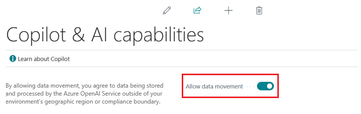

Copilot- und KI-Funktionen konfigurieren
In diesem Artikel wird erläutert, wie Sie Microsoft Copilot und andere KI-Funktionen in Dynamics 365 Business Central steuern. Diese Aufgaben müssen von einem Administrator ausgeführt werden.
Copilot ist eine Systemfunktion und ein integraler Bestandteil von Business Central. Wie bei den meisten Systemfunktionen gewähren Sie einzelnen Benutzern keinen Zugriff und können Copilot auch nicht ein- oder ausschalten. Copilot bietet jedoch Datenverwaltungskontrollen und die Möglichkeit, einzelne Copilot- und KI-Funktionen für jede Umgebung zu deaktivieren. Abhängig von der Funktion gibt es unterschiedliche Ebenen der Zugriffskontrolle für KI-Funktionen:
Datenverschiebung über geografische Regionen hinweg erlauben.
Diese Aufgabe ist nur erforderlich, wenn sich Ihre Business Central-Umgebung in einer anderen Region befindet als der Azure OpenAI Dienst, den sie verwendet. Erfahren Sie mehr über diese Aufgabe.
Aktivieren Sie die Funktion auf der Seite Copilot- und KI-Funktionen. Erfahren Sie mehr über diese Aufgabe.
Wenn eine dieser Anforderungen nicht erfüllt ist, steht das Feature nicht zur Verfügung.
Voraussetzungen
- Sie verwenden Business Central Online.
- Sie sind Administrierender für Business Central.
Datenverschiebung über geografische Regionen hinweg zulassen
Diese Aufgabe gilt nur, wenn die Option Datenverschiebung zulassen oben auf der Seite Copilot- und KI-Funktionen angezeigt wird. Überspringen Sie diese Aufgabe, wenn anstelle der Option Datenverschiebung zulassen der Link Wie kann ich meine Copilot-Daten verwalten? angezeigt wird.

Das Vorhandensein der Option Datenverschiebung zulassen gibt an, dass sich der Standort Ihrer Business Central-Umgebung (also die Region, in der Daten verarbeitet und gespeichert werden) von der geografischen Region des Azure OpenAI Service unterscheidet, die von Copilot verwendet wird. Um Copilot zu aktivieren, müssen Sie die Datenverschiebung zwischen Regionen zulassen. Erfahren Sie mehr über die Datenverschiebung.
Um die Datenverschiebung außerhalb Ihrer geografischen Region zuzulassen, gehen Sie wie folgt vor:
- Suchen Sie in Business Central nach der Seite Copilot- und KI-Funktionen und öffnen Sie sie.
Aktivieren Sie die Option Datenverschiebung zulassen.
Hinweis
Für Umgebungen in den Azure-Regionen Westeuropa und Nordeuropa ist die Option Datenverschiebung zulassen standardmäßig aktiviert.
Deaktivieren Sie die Option Datenverschiebung zulassen, um die die Datenverschiebung ausschalten.
Nachdem ein Azure OpenAI Service in der geografischen Region Ihrer Business Central-Umgebung verfügbar ist, wird Ihre Umgebung automatisch damit verbunden. An dieser Stelle wird die Option Datenverschiebung zulassen auf der Seite Copilot- und KI-Funktionen nicht mehr angezeigt.
Features aktivieren
Alle Copilot- und KI-Funktionen sind standardmäßig aktiv, wenn sie in der Vorschau verfügbar gemacht werden oder allgemein verfügbar werden. Auf der Seite Copilot- und KI-Funktionen können Sie einzelne Features für alle Benutzenden deaktivieren oder wieder aktivieren.
- Suchen Sie in Business Central nach der Seite Copilot- und KI-Funktionen und öffnen Sie sie.
Die Seite listet alle verfügbaren Copilot- und KI-bezogenen Features und ihren aktuellen Status auf. (Der Status kann Aktiv oder Inaktiv sein.) Die Funktionen sind in zwei Abschnitte unterteilt: ein Abschnitt für Funktionen, die sich in der Vorschauversion befinden, und ein Abschnitt für Funktionen, die allgemein verfügbar sind.
- Um eine Funktion zu aktivieren, wählen Sie sie aus der Liste aus, und wählen Sie dann Aktivieren aus.
Zum Deaktivieren einer Funktion wählen Sie sie aus der Liste und dann Deaktivieren aus.


Gewähren von Benutzerzugriff
Copilot- und KI-Funktionen können Funktionen bieten, die für alle Benutzenden in Ihrer Organisation oder für bestimmte Benutzerrollen gedacht sind. Die meisten Copilot- und KI-Funktionen bieten Zugriffskontrolle mithilfe von Berechtigungen und Berechtigungssätzen im Berechtigungsverwaltungssystem von Business Central. Erfahren Sie mehr über Berechtigungen und Berechtigungssätze.
In der folgenden Tabelle sind die Berechtigungen aufgelistet, die für die Verwendung der von Business Central bereitgestellten Copilot-Funktionen erforderlich sind.
| Copilot-Funktion | Erforderliche Berechtigungen |
|---|---|
| Analyseunterstützung | Der Berechtigungssatz DATENANALYSE – AUSFÜHREN oder die Ausführungsberechtigung für das Systemobjekt 9640, Datenanalysemodus zulassen Dies sind die Berechtigungen, die auch für den Zugriff auf den Analysemodus erforderlich sind. |
| Unterstützung bei der Bankkontoabstimmung | Berechtigung auf Seite 7250, Bankkontoabstimmungs-KI-Vorschlag und Seite 7252 Übertr. KI-Vorschlag auf Fibu-Konto |
| Chat | Es gibt keine Berechtigungen oder Berechtigungssätze, die den Zugriff auf den Chat auf Benutzerbasis steuern. Wenn der Chat aktiviert ist, steht er allen Benutzenden zur Verfügung. |
| E-Belege zuweisen | Berechtigung auf Seite 6166 E-Beleg-Best. Copilot-Vorschl. |
| Vorschläge für Marketingtexte | Berechtigung auf Seite 5836 Copilot-Marketingtext |
| Verkaufszeilenvorschläge | Berechtigung auf Seite 7275, KI-Vorschläge für Verkaufszeilen und Seite 7276 KI-Untervorschläge für Verkaufszeilen |
Um den Zugriff auf bestimmte, nicht von Microsoft stammende Copilot- und KI-Funktionen zu gewähren oder zu verweigern, wenden Sie sich an die Dokumentation oder den Herausgeber des Features und informieren Sie sich über die erforderlichen Berechtigungen.
Voraussetzungen um Administrierender zu sein
Sie müssen entweder über SUPER-Berechtigungen in Ihrem Business Central-Benutzerkonto oder über eine der folgenden Business Central-Lizenzen verfügen:
- Delegierter Admin-Agent – Partner
- Delegierter Helpdesk-Agent – Partner
- Interner Admin
- Interner BC-Administrator
- Dynamics 365-Administrator
Business Central bietet noch keine granularen Berechtigungen auf Objektebene, sodass nur bestimmte Administrierende Copilot konfigurieren können.
Nächste Schritte
Nachdem Sie die Funktionen aktiviert und ihnen zugestimmt haben, können Sie sie ausprobieren. Gehen Sie zu den folgenden Artikeln:
- Marketingtext für Artikel mit Copilot hinzufügen
- Listendaten mithilfe von Copilot analysieren
- Chat mit Copilot
- E-Belege mit Copilot Bestellzeilen zuordnen
- Bankkontoabstimmung mit Copilot
- Zeilen in Verkaufsaufträgen mit Copilot vorschlagen
Siehe auch
Probleme mit Copilot- und KI-Funktionen beheben
Häufig gestellte Fragen zur Analyseunterstützung
Häufig gestellte Fragen zur Unterstützung bei der Bankkontoabstimmung
Häufig gestellte Fragen zum Chat mit Copilot
Häufig gestellte Fragen zur Zuordnung von E-Belegen zu Bestellungen
Häufig gestellte Fragen zu Vorschlägen für Marketingtexte
Häufig gestellte Fragen zu Verkaufszeilenvorschlägen
Überblick über Vorschläge für Marketingtexte